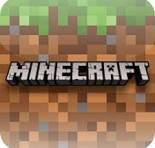
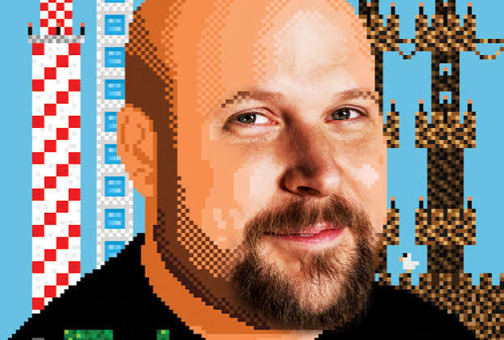

Minecraft is an open-world blocky sandbox which was made in 2009. Despite being so vast, it was made by one guy named "Notch" in just 6 days. It started off with just a few blocks but turned into a 60 million by 60 million world with 3 dimensions and soon to be.

The first update for Minecraft happened in January of 2012. It added spawn eggs, superflat mode, and more. As time went on, things like the Nether, the End, and the combat update were added.
It succeeded because of how the game was designed. It's oped world differentiated it from its era of games. Its blocky graphics also made it iconic while still being modern for its time.
Hidden Fact: Notch sold Minecraft to Microsoft for 2.5 billion dollars and is tied with Fortnite for my favorite game
Back to Home ⌂